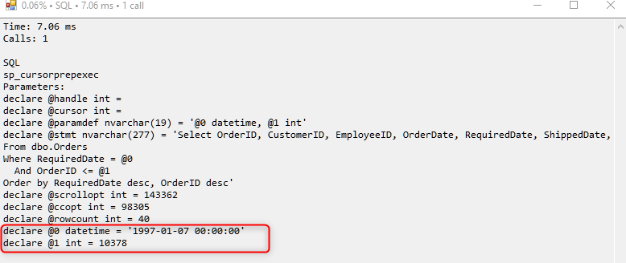

Running SQLs with parameters in Management Studio
Any SQL that is written to the profiler, dblog or query exceptions, now includes the bound parameters as a set of declare statements that SQL Management studio can use to run that sql with it's bound parameters.

See
Integrating to older versions of ENV
The change was done between versions: 31718 and 31719 - you can run a migration of both these versions and compare env. The files that were touched are:
- LogDatabaseWrapper.cs
- SQLClient.cs
- Profiler.cs
The code for it
Here's the relevant code that you need for older versions of ENV - it's not identical to what we have in a current migration, but it's suited for you to integrate easily
In the class LogDatabaseWrapper replace the ParameterInfo method with the following code:
internal static string ParameterInfo(string title, IEnumerable parameters)
{
var sw = new StringWriter();
bool first = true;
foreach (IDbDataParameter parameter in parameters)
{
if (first)
{
first = false;
sw.WriteLine("\n{0}:", title);
}
var x = parameter.Value;
if (x is DBNull)
x = "null";
if (x is int && (parameter.ParameterName == "@ccopt" || parameter.ParameterName == "@scrollopt"))
{
x = x.ToString() + " /*" + ((int)x).ToString("X") + "*/";
}
else if (x is string|| x is TimeSpan)
{
x = "'" + x.ToString().Replace("'", "''") + "'";
}
else if (x is DateTime)
{
x = "'" + ((DateTime)x).ToString("yyyy-MM-dd HH:mm:ss") + "'";
}
if (x!=null)
sw.WriteLine(string.Format("declare {0} {2} = {1}", parameter.ParameterName, x, SQLClientEntityDataProvider.TranslateParameterTypeToSQLType(parameter)));
}
return sw.ToString();
}
internal static string TranslateParameterTypeToSQLType(IDbDataParameter p)
{
switch (p.DbType)
{
case DbType.Int16:
return "int";
case DbType.Int32:
return "int";
case DbType.Int64:
return "bigint";
case DbType.Decimal:
return string.Format("decimal ({0},{1})", p.Precision, p.Scale);
case DbType.DateTime:
return "datetime";
case DbType.AnsiString:
return "varchar(" + (p.Size == -1 ? "max" : p.Size.ToString()) + ")";
case DbType.String:
return "nvarchar(" + (p.Size == -1 ? "max" : p.Size.ToString()) + ")";
case DbType.Binary:
return "varbinary(" + (((byte[])p.Value).Length > 8000 ? ((byte[])p.Value).Length.ToString() : "8000") + ")";
default:
return "varchar(max)";
}
} In the file SQLClient.cs in the class SQLDataProviderHelper fix the ProcessException method as follows:
internal Exception ProcessException(Exception e, Firefly.Box.Data.Entity entity, IDbCommand command)
{
if (command != null)
{
if (!e.Data.Contains("SQL"))
using (var s = new StringWriter())
{
s.WriteLine(command.CommandText);
- foreach (IDbDataParameter p in command.Parameters)
- {
- s.WriteLine(string.Format("{0}({2}) = {1}", p.ParameterName, p.Value, p.DbType));
- }
s.WriteLine (LogDatabaseWrapper.TextLogWriter.ParameterInfo("Parameter Info", command.Parameters));
e.Data.Add("SQL", s.ToString());
}
command.Dispose();
}
.... Help us improve, Edit this page on GitHub
or email us at info@fireflymigration.com